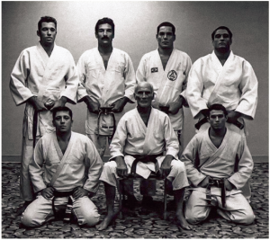

Jiu-Jitsu Brasileiro

Campeonato de Jiu-Jitsu
O Jiu-Jitsu é uma arte marcial originalmente japonesa, mas que se popularizou através de seu estilo brasileiro ensinado por Hélio e Carlos Gracie. Esta arte marcial trabalha um conjunto de golpes de imobilização com a finalidade de cessar toda e quaisquer movimentação de seus oponenetes, variando de chaves tanto de braços quanto de pernas, sendo uma luta versátil no chão.
História
Hélio Gracie e descendentes
A história do Jiu-Jitsu Brasileiro está diretamente ligada à popularidade do MMA nos últimos anos. Há mais de um século, os membros da Família Gracie desenvolveram a arte suave e provaram o seu valor, disseminando a luta por outras modalidades.
O Jiu-Jitsu não começou por aqui — ele foi trazido pelos japoneses—, mas foram os brasileiros que moldaram a luta na forma como conhecemos. O termo japonês jū significa “suavidade”, enquanto jutsu diz respeito à “arte”, “técnica”. Por isso, o Jiu-Jitsu é considerado uma luta de arte suave.
É difícil datar exatamente o nascimento dessa arte marcial. Alguns acreditam que ela começou na Índia, há 2.500 anos, mas foi nas escolas de samurais japonesas que ela se desenvolveu, com o nome de jujutsu (arte suave). Essa prática era conhecida por não utilizar armas e ser aplicada em situações de combate e batalhas. As torções e quedas eram o artifício mais eficaz para atacar samurais que vestiam armaduras.
Em 1882, Jigoro Kano, que era praticante da arte marcial, abriu a academia Kodokan, com o objetivo de modernizar o jujutsu praticado no Japão. O seu desenvolvimento deu origem ao judô, que significa “caminho suave” e, apesar de manter a luta de chão, prioriza as quedas e as imobilizações, além de ser voltada para a competição.
A arte suave desembarcou no Brasil no início do século XX, junto com a Imigração Japonesa. Mitsuyo Maeda partiu em 1904 com o objetivo de visitar diversos países e disseminar a arte marcial entre lutadores de outros estilos. No Brasil, ele foi recebido por Gastão Gracie. O empresário brasileiro era dono de negócios variados, como um circo que apresentava espetáculos de dança e combates. Foi nessa oportunidade que Conde Koma, como o japonês era conhecido, ganhou fama por derrotar adversários mais altos e pesados utilizando as suas técnicas de luta. Campeão no Japão, Maeda fez um acordo com Gastão: ensinar o seu filho mais velho, Carlos, as técnicas do jujutsu, em troca da ajuda recebida para permanecer no Brasil. Esse encontro manteve acesa a chama da arte milenar e o jovem Gracie, que ficou impressionado com a arte marcial, empenhou-se para aprender as suas técnicas.
O irmão mais novo, Hélio Gracie, era impedido de treinar porque tinha problemas físicos quando criança. Porém, ele acompanhava as atividades na academia e, dessa forma, aprendeu todos os movimentos. A maioria dos golpes utilizados já existia nos livros japoneses, mas ele implementou os princípios da alavanca, o que deu origem ao Jiu-Jitsu Brasileiro. A partir disso, começou a ser desenvolvido o Jiu-Jitsu Brasileiro, com características únicas.
Em 1932, com apenas 19 anos, Hélio disputou a sua primeira luta de vale-tudo, contra o boxeador Antônio Portugal, e venceu em 40 segundos. Porém, foi em novembro daquele ano que o Jiu-Jitsu apareceu nos jornais e a lenda da Família Gracie nasceu. O confronto era contra o wrestler Fred Ebert, dos Estados Unidos. Com 98 quilos (35 a mais do que o brasileiro), ele estava no país para algumas lutas de exibição. O combate durou 1h40 e só foi interrompido pela polícia, que temeu o pior. Mesmo não vencendo, Hélio aproveitou o desconhecimento de luta de chão do americano e foi superior — o suficiente para ser aclamado pelo público. Hélio enfrentou outros oponentes e venceu ou empatou 15 das 17 lutas disputadas. O esporte ganhou fama no país e um programa na televisão em 1959, o Heróis do Ringue, que passava na TV Continental. As lutas dos discípulos de Carlos e Hélio, como Carlson Gracie e João Alberto Barreto, eram transmitidas em horário nobre. A “profissionalização” do vale-tudo ocorreu na década de 1980, quando os desafios entre as artes marciais eram disputados em ginásios ou estádios. Na prática, a equipe do Jiu-Jitsu enfrentava uma equipe diversa, com atletas de luta-livre e muay thai. Em 1991, a Rede Globo transmitiu uma dessas competições.